Benom
Un assistant vocal pour ton Mac. Tu lui parles, il te répond, en français ou en anglais. Ta voix reste sur ton Mac. A voice assistant for your Mac. You talk, it answers, in English or French. Your voice stays on your Mac.
Télécharger pour Mac Download for MacCe que fait BenomWhat Benom does
Une vraie conversationA real conversation
Parle naturellement, coupe-lui la parole, enchaîne les questions. Pas de mot magique, pas de bouton à tenir.Speak naturally, interrupt it, ask follow-ups. No wake word, no button to hold.
Ta voix reste chez toiYour voice stays home
L'écoute et la voix tournent sur ton Mac. Seul le texte part vers le modèle que tu choisis, local ou en ligne.Listening and speech run on your Mac. Only text goes to the model you pick, local or online.
Rappels et agendaReminders and agenda
« Rappelle-moi tous les lundis à 9 h. » Benom te le dit au bon moment, ou attend ton retour si tu n'es pas là.“Remind me every Monday at 9.” Benom tells you at the right time, or waits until you're back.
Météo et recherche webWeather and web search
La météo de ta ville ou d'ailleurs, et des réponses à jour depuis le web (avec une clé Tavily, gratuite).Weather for your city or anywhere, and up-to-date answers from the web (with a free Tavily key).
Calculs et conversionsMath and conversions
Calculs, unités, devises au cours du jour : des résultats exacts, pas des approximations.Math, units, currencies at today's rate: exact results, not guesses.
Le cerveau de ton choixThe brain you choose
Ollama sur ton Mac, ou un service en ligne comme Groq, OpenRouter, Mistral ou OpenAI.Ollama on your Mac, or an online service like Groq, OpenRouter, Mistral or OpenAI.
Installer en trois étapesInstall in three steps
- TéléchargeDownloadOuvre le fichier Benom.dmg.Open the Benom.dmg file.
- GlisseDragDépose Benom dans le dossier Applications.Drop Benom into your Applications folder.
- LanceLaunchL'assistant installe le reste et t'aide à choisir ton modèle. Les mises à jour te sont ensuite proposées automatiquement.The setup assistant installs the rest and helps you pick a model. Updates are then offered automatically.
Ce qu'il te fautWhat you need
- MacMac
- Puce Apple (M1 ou plus récent). Les Mac Intel ne sont pas pris en charge.Apple chip (M1 or later). Intel Macs are not supported.
- macOS
- 14 Sonoma ou plus récent14 Sonoma or later
- Espace disqueDisk space
- Environ 4 Go, téléchargés au premier lancementAbout 4 GB, downloaded on first launch